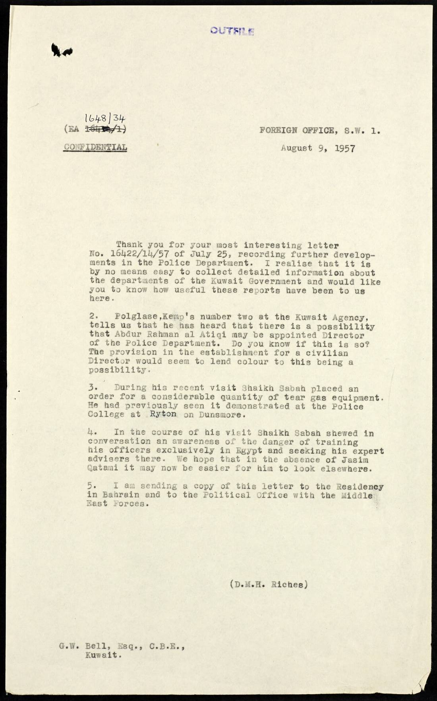
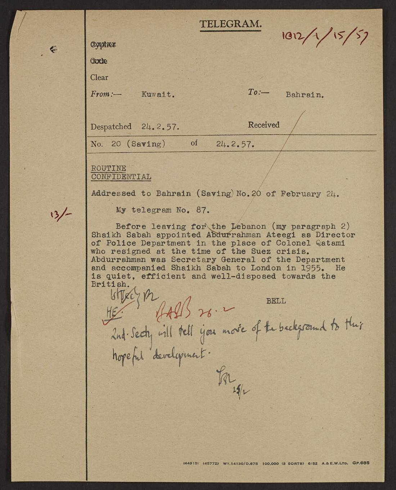

After Jassim left, the British hoped that without him Sheikh Sabah would stop training police officers only in Egypt. Earlier, in February 1957, Sheikh Sabah appointed Abdulrahman Al-Ateeqi as Director of the Police Department in place of Colonel Qatami.
Why it matters
It closes the story of Jassim's police years and shows the British saw him as the link between Kuwait's police and Egypt.
Who is meant
The same Jassim Al-Qatami as the records that give his full name: Director of Police, resigned at Suez, later a nationalist member of the National Assembly.
Page copies

FO 371/126984, p. 142

FO 1016/553, p. 83
Original text
FO 371/126984, page 142, Foreign Office letter, summer 1957:
2. Polglase, Kemp's number two at the Kuwait Agency, tells us that he has heard that there is a possibility that Abdur Rahman al Atiqi may be appointed Director of the Police Department. …
4. In the course of his visit Shaikh Sabah shewed in conversation an awareness of the danger of training his officers exclusively in Egypt and seeking his expert advisers there. We hope that in the absence of Jasim Qatami it may now be easier for him to look elsewhere.
FO 1016/553, page 83, telegram, February 24, 1957:
Before leaving for the Lebanon Shaikh Sabah appointed Abdurrahman Ateegi as Director of Police Department in the place of Colonel Qatami who resigned at the time of the Suez crisis. Abdurrahman was Secretary General of the Department and accompanied Shaikh Sabah to London in 1955.
English translation
الملف FO 371/126984، الصفحة ١٤٢، رسالة من وزارة الخارجية، صيف ١٩٥٧:
٢. أخبرنا بولغلاس، نائب كمب في الوكالة في الكويت، أنه سمع باحتمال تعيين عبدالرحمن العتيقي مديرا لدائرة الشرطة. …
٤. خلال زيارته أبدى الشيخ صباح في الحديث وعيا بخطورة تدريب ضباطه في مصر وحدها وطلب خبرائه منها. ونأمل أنه في غياب جاسم القطامي قد يصبح من الأسهل عليه الآن أن يتجه إلى جهات أخرى.
الملف FO 1016/553، الصفحة ٨٣، برقية، ٢٤ فبراير ١٩٥٧:
قبل مغادرته إلى لبنان عيّن الشيخ صباح عبدالرحمن العتيقي مديرا لدائرة الشرطة مكان العقيد القطامي الذي استقال وقت أزمة السويس. وكان عبدالرحمن أمينا عاما للدائرة ورافق الشيخ صباح إلى لندن عام ١٩٥٥.
Notes
The archive's text of FO 371/126984 reads "Qatani"; the scan reads Qatami.
Others named
Abdulrahman Al-Ateeqi
Sources
The National Archives, London, digitised by the Arabian Gulf Digital Archive (agda.ae). Images reproduced by permission of The National Archives, London, England.
Archive reference
FO 371/126984 · Police forces in Dubai, Qatar, Kuwait, Muscat and Oman: Trucial Oman Scouts
FO 1016/553 · Internal political situation: Kuwait
How this text was made: Typed from the archive's own text reading of the scan, corrected against the scan where the reading was garbled. … marks text left out. Arabic translation by Claude; please review.